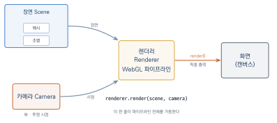
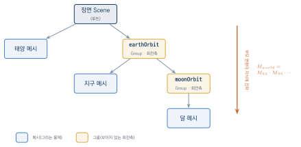
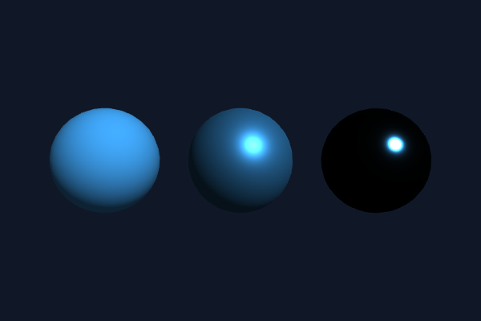
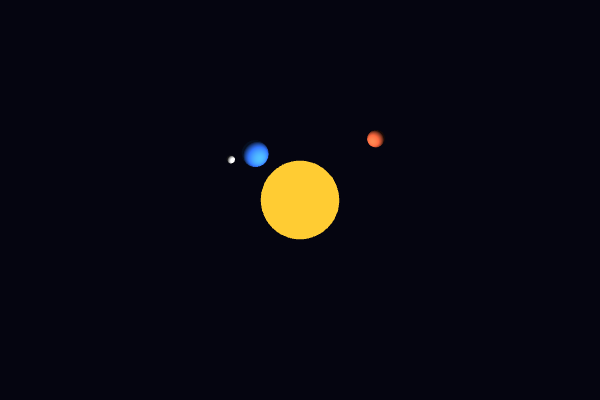

Three.js와 실전 프로젝트
이 장을 마치면
- Three.js의 3대 구성 요소인 장면·카메라·렌더러로 3차원 장면을 만들 수 있다.
- 지금까지 배운 저수준 개념이 Three.js의 어떤 기능에 대응되는지 설명할 수 있다.
- 장면 그래프에 물체를 계층적으로 조립하고 애니메이션할 수 있다.
- 재질·조명·그림자·텍스처를 조합하여 실감 나는 장면을 구성할 수 있다.
- 드래그 회전과 휠 줌을 갖춘 3차원 제품 뷰어를 완성할 수 있다.
지금까지 우리는 삼각형 하나를 그리기 위해 셰이더를 컴파일하고, 버퍼에 정점을 담고, 행렬을 곱하고, 조명 방정식을 손으로 코딩해 왔다. 이 책의 마지막 장에서는 그 모든 일을 대신해 주는 고수준 라이브러리 Three.js를 만난다. 열한 개 장에 걸쳐 쌓아 온 저수준 지식이 헛수고였다는 뜻이 아니다. 오히려 그 반대이다. Three.js의 모든 클래스는 우리가 직접 만들어 본 것들의 포장이므로, 원리를 아는 독자에게 Three.js는 블랙박스가 아니라 투명한 상자이다. 어떤 기능이 내부에서 무엇을 하는지 훤히 보이고, 문제가 생겼을 때 어디를 들여다보아야 할지도 안다.
이 장의 전반부에서는 Three.js의 구조를 지금까지 배운 개념과 하나하나 짝지어 가며 익힌다. 후반부에서는 책 전체의 종합 문제로서, 마우스로 돌려 보고 확대할 수 있는 3차원 제품 뷰어를 처음부터 끝까지 만든다. 1장에서 띄운 삼각형 하나로 시작한 여정을 완성된 웹 애플리케이션으로 마무리해 보자.
12.1 Three.js 시작하기
왜 고수준 라이브러리인가
2장에서 첫 삼각형을 그리기까지 우리는 70줄 가까운 코드를 썼다. 셰이더 소스 작성, 컴파일과 링크, VAO와 VBO 설정, 속성 연결 — 삼각형 하나에 이만큼이었다. 여기에 조명(7장)을 넣으려면 법선 버퍼와 조명 셰이더가, 텍스처(8장)를 입히려면 UV 좌표와 텍스처 설정 코드가, 그림자(11장)를 드리우려면 깊이 맵 렌더링 패스가 더해진다. 물체 하나가 제대로 보이는 장면을 만드는 데 수백 줄이 필요한 것이다.
이 코드들은 프로젝트가 달라져도 거의 그대로 반복된다. 그래서 실무의 웹 3차원 개발은 이 반복 작업을 감싸 놓은 고수준 라이브러리 위에서 이루어지는 것이 보통이며, 그중 가장 널리 쓰이는 것이 Three.js이다. Three.js는 WebGL 위에 물체·재질·조명·카메라라는 직관적인 개념 층을 얹어, 방금 말한 수백 줄짜리 장면을 수십 줄로 줄여 준다. 잠시 후 확인하겠지만, 조명을 받으며 회전하는 정육면체가 30줄이면 완성된다.
HTML 파일에서는 다음 한 줄로 라이브러리를 불러온다. 4장의 glMatrix와 마찬가지로, 이 책의 웹 에디션 실행 창에는 Three.js가 전역 객체 THREE로 미리 로드되어 있으므로 예제를 바로 실행할 수 있다.
<script src="https://cdn.jsdelivr.net/npm/three@0.147.0/build/three.min.js">
</script>최신 버전의 Three.js는 위와 같은 클래식 스크립트 빌드를 제공하지 않고, import 문과 importmap을 쓰는 ES 모듈 방식으로 이행했다. 실무 프로젝트라면 모듈 방식과 npm 기반 빌드 도구를 쓰는 것이 표준이다. 다만 이 책에서는 별도의 빌드 설정 없이 어디서나 실행해 볼 수 있도록, 전역 THREE를 제공하는 마지막 클래식 빌드 계열인 0.147 버전을 사용한다. 이 장에서 배우는 클래스와 개념은 최신 버전에서도 그대로 통한다.
세 가지 구성 요소: 장면, 카메라, 렌더러
Three.js 프로그램의 뼈대는 세 객체로 이루어진다. 연극에 비유하면 각각 무대, 관객의 눈, 그리고 촬영 감독이다.
- 장면(
THREE.Scene) — 물체와 조명을 담는 그릇이다. 무대 위에 배우와 조명 기구를 올려놓듯, 그릴 것들을 모두 장면에 추가한다. - 카메라(
THREE.PerspectiveCamera) — 장면을 바라보는 시점이다. 6장에서 만든 뷰 행렬과 투영 행렬이 이 객체 안에 들어 있다. - 렌더러(
THREE.WebGLRenderer) — 장면을 카메라의 시점에서 그려 캔버스에 출력한다. 내부에서 WebGL 컨텍스트를 얻고, 셰이더를 컴파일하고, 버퍼를 채우고, 그리기 명령을 내리는 — 우리가 손으로 하던 — 모든 일을 담당한다.
그림 12.1은 이 세 객체가 어떻게 맞물리는지 보여 준다. 렌더러가 한가운데에서 장면(그릴 것)과 카메라(시점)를 입력으로 받아, 그 결과를 캔버스에 픽셀로 출력하는 구조이다.

render(scene, camera) 한 번의 호출이 가동한다.
세 객체가 만나는 지점이 렌더러의 render() 메서드이다. "이 장면을 이 카메라로 찍어라"라는 한 줄의 명령이 파이프라인 전체를 가동시킨다.
renderer.render(scene, camera); // 장면을 카메라 시점에서 그린다첫 예제: 회전하는 정육면체
곧바로 완성된 프로그램을 보자. 조명을 받으며 회전하는 초록 정육면체이다.
// ----- 렌더러: 기존 캔버스에 연결 -----
const renderer = new THREE.WebGLRenderer({
canvas: document.getElementById('glCanvas'),
antialias: true
});
renderer.setSize(600, 400);
// ----- 장면과 카메라 -----
const scene = new THREE.Scene();
scene.background = new THREE.Color(0x101828);
const camera = new THREE.PerspectiveCamera(45, 600 / 400, 0.1, 100);
camera.position.set(2, 2, 4); // 카메라 위치
camera.lookAt(0, 0, 0); // 원점을 바라보게
// ----- 물체: 지오메트리 + 재질 = 메시 -----
const geometry = new THREE.BoxGeometry(1.5, 1.5, 1.5);
const material = new THREE.MeshStandardMaterial({ color: 0x33cc66 });
const cube = new THREE.Mesh(geometry, material);
scene.add(cube);
// ----- 조명 -----
const sunLight = new THREE.DirectionalLight(0xffffff, 1.0);
sunLight.position.set(3, 5, 4); // 빛이 오는 방향
scene.add(sunLight);
scene.add(new THREE.AmbientLight(0x404040)); // 은은한 주변광
// ----- 애니메이션 루프 -----
renderer.setAnimationLoop((time) => {
cube.rotation.y = time * 0.001; // 1초에 약 1라디안씩 회전
cube.rotation.x = time * 0.0004;
renderer.render(scene, camera);
});셰이더도, 버퍼도, 행렬 곱도 보이지 않는데 화면에는 원근감 있는 정육면체가 조명을 받으며 돌아간다. 코드를 위에서부터 읽어 보면 낯선 것이 하나도 없다는 사실을 깨닫게 된다.
렌더러를 만들 때 canvas 옵션으로 기존 캔버스를 넘긴 것은 2장에서 getContext('webgl2')를 호출하던 자리이다. PerspectiveCamera의 네 인자(시야각 45도, 종횡비, near, far)는 6장에서 투영 행렬을 만들 때 넘기던 인자 그대로이며, glMatrix가 라디안을 받았던 것과 달리 시야각을 도(degree) 단위로 받는다는 점만 다르다. camera.lookAt()은 6장의 뷰 행렬 계산이고, BoxGeometry는 9장에서 손으로 만들던 정점·법선·인덱스 버퍼를 대신 만들어 주는 객체이다. MeshStandardMaterial은 조명 셰이더 한 벌이고, DirectionalLight는 7장의 방향광이다. 그리고 setAnimationLoop()는 10장의 requestAnimationFrame 루프를 감싼 것으로, 매 프레임 콜백에 경과 시간(밀리초)을 넘겨 준다.
물체를 만드는 공식은 하나만 기억하면 된다. 메시 = 지오메트리 + 재질. 지오메트리geometry는 형태(정점 데이터)를, 재질material은 표면의 성질(셰이더와 그 매개변수)을 담당하며, 이 둘을 THREE.Mesh로 묶어 장면에 추가하면 그릴 준비가 끝난다.
우리가 배운 개념과 Three.js의 대응
이쯤에서 지난 열한 개 장의 내용이 Three.js의 어디에 숨어 있는지 한눈에 정리해 두자. 이 표가 이 장 전체의 지도이다.
| 우리가 직접 만들던 것 | Three.js에서는 |
|---|---|
| 정점 버퍼·VAO 구성 (2장, 9장) | BoxGeometry 등 지오메트리 객체 |
| 셰이더 작성·컴파일·링크 (3장) | Material 객체가 내장 셰이더 제공 |
모델 행렬 uModel 조립 (5장) | position·rotation·scale 속성 |
| 뷰·투영 행렬 (6장) | PerspectiveCamera, camera.lookAt() |
| MVP 곱을 uniform으로 전달 | renderer.render()가 자동 처리 |
| 조명 계산 셰이더 (7장) | DirectionalLight 등 조명 객체 |
| 텍스처 생성·바인딩 (8장) | TextureLoader, CanvasTexture |
| 렌더링 루프와 이벤트 (10장) | renderer.setAnimationLoop() |
| 그림자 매핑 구현 (11장) | castShadow 속성 한 줄 |
Three.js만 배우면 되는 것 아니냐는 생각이 들 수 있다. 그렇지 않다. 라이브러리가 편한 것은 모든 일이 잘 풀릴 때까지이다. 장면이 이유 없이 느려질 때 드로 콜과 버퍼(9장)를 모르면 원인을 찾을 수 없고, 물체가 이상한 곳에 그려질 때 행렬 곱의 순서(5장)를 모르면 손댈 곳이 없으며, 내장 재질로 표현할 수 없는 효과가 필요해지는 순간 결국 셰이더(3장, 7장)를 직접 써야 한다. Three.js 공식 문서조차 심화 기능은 WebGL 개념으로 설명한다. 원리를 아는 사람에게 라이브러리는 시간을 아껴 주는 날개이고, 모르는 사람에게는 고장 나는 순간 멈춰 서는 블랙박스이다.
Three.js 프로그램은 장면(물체와 조명의 그릇)·카메라(시점)·렌더러(그리기 담당)의 세 축으로 구성되며, renderer.render(scene, camera)가 파이프라인 전체를 가동한다. 물체는 지오메트리(형태) + 재질(표면) = 메시로 만들어 장면에 추가한다. 이들은 모두 우리가 1~11장에서 직접 만들던 것들의 포장이다.
12.2 장면 그래프와 오브젝트
모든 것은 Object3D이다
Three.js에서 장면에 들어가는 모든 것 — 메시, 카메라, 조명, 심지어 장면 자신까지 — 은 THREE.Object3D라는 공통 부모 클래스를 상속한다. Object3D는 세 가지 변환 속성을 가진다.
mesh.position.set(1, 2, 0); // 이동 (Vector3)
mesh.rotation.y = Math.PI / 4; // 회전 (라디안, 축별 오일러 각)
mesh.scale.set(2, 2, 2); // 크기 (Vector3)이 세 속성이 바로 5장의 모델 행렬이다. 매 프레임 렌더러는 각 물체의 위치·회전·크기로부터 이동 행렬 \(T\), 회전 행렬 \(R\), 크기 행렬 \(S\)를 만들어 \(TRS\) 순서로 곱한 뒤, 우리가 uModel uniform으로 넘기던 바로 그 행렬을 자동으로 조립해 셰이더에 전달한다. 12.1절의 정육면체 예제에서 cube.rotation.y에 값을 넣는 것만으로 물체가 회전한 이유이다. 행렬을 만드는 일도, uniform으로 보내는 일도 라이브러리의 몫이 되었고, 우리에게 남은 것은 "어떤 변환을 원하는가"라는 선언뿐이다.
장면 그래프 — 부모를 따라 움직이는 자식
Object3D의 진짜 힘은 add() 메서드에 있다. 지금까지 우리는 물체를 항상 장면에 추가했지만, 물체를 다른 물체에 추가할 수도 있다.
parent.add(child); // child는 이제 parent의 자식이 된다이렇게 부모-자식 관계로 연결된 물체들의 트리를 장면 그래프scene graph라고 한다. 장면 그래프에서 자식의 position·rotation·scale은 세계 좌표가 아니라 부모를 기준으로 한 상대 변환이다. 자식이 화면에 그려질 때의 최종 변환은 루트(장면)부터 자신까지 내려오는 경로의 모델 행렬을 모두 곱한 것이 된다.
\[
M_{\text{world}} = M_{\text{부모의 부모}} \cdot M_{\text{부모}} \cdot M_{\text{자식}}
\]
낯익은 구조이다. 5장의 계층적 모델링에서 우리는 부모의 행렬을 자식에게 곱해 전달하기 위해 행렬을 복사하고, 곱하고, 함수 호출 순서를 관리했다. 장면 그래프는 그 수고를 add() 한 줄로 대체한다. 부모를 움직이면 자식이 통째로 따라 움직이고, 부모를 회전시키면 자식이 부모 주위를 도는 것이다.
눈에 보이는 메시 없이 계층 구조만 만들고 싶을 때는 THREE.Group을 쓴다. Group은 아무것도 그리지 않는 빈 Object3D로, 부품들을 묶는 조립대이자 보이지 않는 회전축 역할을 한다.
태양계 애니메이션
장면 그래프의 위력을 보여 주는 고전적인 예제가 태양계이다. 5장에서 행렬 곱을 손으로 이어 붙여 만들었던 정적인 태양-지구-달을, 이번에는 공전과 자전까지 갖춘 완성판으로 만들어 보자. 계층 구조는 다음과 같이 설계한다.
- 장면 — 태양 메시, 그리고
earthOrbit그룹 earthOrbit(태양 자리의 보이지 않는 회전축) — 지구 메시, 그리고moonOrbit그룹moonOrbit(지구 자리의 회전축) — 달 메시
그림 12.2은 이 계층을 트리로 나타낸 것이다. 장면을 뿌리로 하여 메시와 그룹이 부모-자식으로 매달려 있고, 부모의 변환이 자식에게 곱해져 내려간다. earthOrbit을 회전시키면 반지름 4만큼 떨어져 매달린 지구가 태양 주위를 돌고(공전), moonOrbit도 지구와 같은 자리에 매달려 있으므로 함께 돈다. 다시 moonOrbit을 회전시키면 달이 지구 주위를 돈다. 두 회전이 자동으로 합성되어 달은 "지구를 따라 태양을 돌면서 동시에 지구 주위를 도는" 복합 운동을 하게 된다.

const renderer = new THREE.WebGLRenderer({
canvas: document.getElementById('glCanvas'), antialias: true });
renderer.setSize(600, 400);
const scene = new THREE.Scene();
scene.background = new THREE.Color(0x050510);
const camera = new THREE.PerspectiveCamera(45, 600 / 400, 0.1, 100);
camera.position.set(0, 6, 10);
camera.lookAt(0, 0, 0);
// ----- 태양: 스스로 빛나는 물체이므로 조명이 필요 없는 Basic 재질 -----
const sun = new THREE.Mesh(
new THREE.SphereGeometry(1.2, 32, 16),
new THREE.MeshBasicMaterial({ color: 0xffcc33 }));
scene.add(sun);
// 태양 자리의 점광원이 행성들을 비춘다 (7장의 점광원)
scene.add(new THREE.PointLight(0xffffff, 1.5));
scene.add(new THREE.AmbientLight(0x202020));
// ----- 지구 계층: 공전 중심 Group → 지구 -----
const earthOrbit = new THREE.Group(); // 태양 자리의 보이지 않는 회전축
scene.add(earthOrbit);
const earth = new THREE.Mesh(
new THREE.SphereGeometry(0.5, 32, 16),
new THREE.MeshLambertMaterial({ color: 0x3377ff }));
earth.position.x = 4; // 공전 반지름
earthOrbit.add(earth);
// ----- 달 계층: 지구 자리의 Group → 달 -----
const moonOrbit = new THREE.Group();
moonOrbit.position.x = 4; // 지구와 같은 자리에 놓는다
earthOrbit.add(moonOrbit);
const moon = new THREE.Mesh(
new THREE.SphereGeometry(0.15, 16, 8),
new THREE.MeshLambertMaterial({ color: 0xbbbbbb }));
moon.position.x = 1.0; // 달의 공전 반지름
moonOrbit.add(moon);
// ----- 공전과 자전: 회전각만 갱신하면 행렬 전파는 Three.js의 몫 -----
renderer.setAnimationLoop((time) => {
const t = time * 0.001; // 초 단위 시간
earthOrbit.rotation.y = t * 0.5; // 지구 공전
moonOrbit.rotation.y = t * 2.0; // 달 공전
earth.rotation.y = t * 3.0; // 지구 자전
renderer.render(scene, camera);
});실행하면 지구가 태양 주위를 돌고, 그 지구를 달이 바짝 따라다니며 도는 모습을 볼 수 있다. 애니메이션 루프를 보자. 우리가 하는 일은 그룹들의 rotation.y에 시간에 비례하는 각도를 넣는 것뿐이고, 부모의 회전이 자식에게 전파되는 행렬 계산은 전부 장면 그래프가 처리한다. 5장에서 이 장면을 만들며 씨름했던 행렬 복사와 곱셈 순서가 모두 사라진 것이다.
세부도 눈여겨보자. 태양은 스스로 빛나는 천체이므로 조명의 영향을 받지 않는 MeshBasicMaterial로 만들었고, 실제 조명은 태양 자리(원점)에 놓인 PointLight가 맡는다. 그 덕에 지구와 달은 언제나 태양을 향한 쪽만 밝게 빛난다. 7장에서 배운 점광원과 확산 반사가 그대로 재현된 것이다.
장면의 모든 요소는 Object3D이며, position·rotation·scale 세 속성이 5장의 모델 행렬을 대신한다. add()로 만들어지는 장면 그래프에서 자식의 변환은 부모 기준의 상대 변환이고, 최종 위치는 루트까지의 행렬 곱으로 자동 계산된다. 보이지 않는 조립대가 필요하면 THREE.Group을 쓴다.
12.3 재질, 조명, 텍스처
앞의 두 예제에서 우리는 MeshStandardMaterial, MeshBasicMaterial, MeshLambertMaterial을 별 설명 없이 골라 썼다. 이 절에서는 재질과 조명, 그리고 텍스처를 제대로 정리한다. 모두 7장·8장·11장에서 셰이더로 구현해 본 것들이므로, 여기서는 "어떤 클래스가 어떤 셰이딩에 해당하는가"만 짝지으면 된다.
재질 — 조명 모델을 고르는 일
Three.js의 메시 재질은 표면이 빛에 어떻게 반응하는지를 결정한다. 대표적인 네 가지가 7장에서 배운 조명 모델과 정확히 대응한다.
| 재질 | 조명 계산 | 7장 대응 |
|---|---|---|
MeshBasicMaterial | 조명 무시, 단색 | 셰이딩 없음 (발광체) |
MeshLambertMaterial | 확산 반사만 | 램버트 확산 |
MeshPhongMaterial | 확산 + 정반사 하이라이트 | 퐁 반사 모델 |
MeshStandardMaterial | 물리 기반(PBR) | 확산+정반사의 현대판 |
MeshBasicMaterial은 조명을 완전히 무시하고 지정한 색을 그대로 칠하므로, 태양처럼 스스로 빛나는 물체나 조명 없이 형태만 확인할 때 쓴다. MeshLambertMaterial은 7장의 확산 반사, 즉 법선과 빛 방향의 내적으로 밝기를 정하는 램버트 모델이다. MeshPhongMaterial은 여기에 정반사 하이라이트를 더한 퐁 모델이고, MeshStandardMaterial은 금속성(metalness)과 거칠기(roughness)라는 두 매개변수로 표면을 기술하는 물리 기반 렌더링physically based rendering(PBR) 재질이다. 오늘날 실무의 기본값은 사실적인 결과를 주는 MeshStandardMaterial이다.
// 금속성 높고 거칠기 낮은 표면 → 매끈한 금속처럼 보인다
const metal = new THREE.MeshStandardMaterial({
color: 0x8899aa, metalness: 0.9, roughness: 0.15 });조명 — 빛 객체를 장면에 놓기
조명도 장면에 추가하는 객체이다. 7장에서 셰이더에 uniform으로 넘기던 광원들이 그대로 클래스가 되어 있다.
| 조명 객체 | 성질 |
|---|---|
AmbientLight | 모든 곳을 균일하게 밝히는 주변광 |
DirectionalLight | 무한히 먼 곳에서 오는 평행광 (태양) |
PointLight | 한 점에서 사방으로 퍼지는 점광원 (전구) |
DirectionalLight와 PointLight는 생성할 때 색과 세기를 받고, position으로 빛의 위치(방향광은 빛이 오는 방향)를 정한다. AmbientLight는 방향이 없으므로 색과 세기만 준다. 실무에서 자주 쓰는 조합은 장면 전체의 밑밝기를 담당하는 약한 AmbientLight 하나에, 주광원이 될 DirectionalLight 하나를 더하는 것이다. 조명이 하나도 없으면 MeshStandardMaterial 같은 조명 재질은 새까맣게 보이니 주의하자.
그림자 — 한 줄로 켜는 그림자 매핑
11장에서 우리는 그림자를 만들기 위해 빛의 시점에서 깊이 맵을 렌더링하고, 본 렌더링에서 각 픽셀이 그 깊이보다 먼지 비교하는 그림자 매핑shadow mapping을 직접 구현했다. Three.js에서는 세 가지만 켜 주면 된다.
renderer.shadowMap.enabled = true; // ① 렌더러의 그림자 기능 켜기
light.castShadow = true; // ② 이 조명이 그림자를 만든다
ball.castShadow = true; // ③ 이 물체가 그림자를 드리운다
floor.receiveShadow = true; // 이 물체가 그림자를 받는다깊이 맵의 생성과 비교, 셰이더 수정은 모두 라이브러리 내부에서 일어난다. 11장에서 겪은 복잡함을 떠올리면, 그림자 매핑이야말로 고수준 라이브러리의 편리함이 극적으로 드러나는 기능이다.
텍스처 — 2D 캔버스로 무늬 만들기
8장에서 텍스처는 이미지를 GPU에 올려 표면에 입히는 것이었다. Three.js는 이미지 파일을 불러오는 TextureLoader 외에, 자바스크립트의 2D 캔버스에 그린 그림을 곧바로 텍스처로 쓰는 CanvasTexture를 제공한다. 8장에서 셰이더로 계산해 만들던 절차적 텍스처를 익숙한 2D 캔버스 API로 그릴 수 있는 것이다. 여기서는 체커보드 무늬를 그려 바닥에 깔아 본다.
다음 예제는 이 절의 세 주제를 한 장면에 모은다. 체커보드 CanvasTexture를 입힌 바닥 위에서 붉은 공이 튀어 오르며 그림자를 드리운다.
const renderer = new THREE.WebGLRenderer({
canvas: document.getElementById('glCanvas'), antialias: true });
renderer.setSize(600, 400);
renderer.shadowMap.enabled = true; // 그림자 매핑 켜기 (11장)
const scene = new THREE.Scene();
scene.background = new THREE.Color(0x202830);
const camera = new THREE.PerspectiveCamera(45, 600 / 400, 0.1, 100);
camera.position.set(4, 4, 7);
camera.lookAt(0, 1, 0);
// ----- 2D 캔버스에 체커보드를 그려 텍스처로 만든다 (8장의 절차 텍스처) -----
const texCanvas = document.createElement('canvas');
texCanvas.width = texCanvas.height = 256;
const ctx = texCanvas.getContext('2d');
const cell = 256 / 8; // 8×8 체커보드
for (let row = 0; row < 8; row++) {
for (let col = 0; col < 8; col++) {
ctx.fillStyle = (row + col) % 2 === 0 ? '#e8e4d8' : '#4a6a8a';
ctx.fillRect(col * cell, row * cell, cell, cell);
}
}
const checkerTex = new THREE.CanvasTexture(texCanvas);
// ----- 바닥: 체커보드 평면, 그림자를 받는다 -----
const floor = new THREE.Mesh(
new THREE.PlaneGeometry(10, 10),
new THREE.MeshStandardMaterial({ map: checkerTex }));
floor.rotation.x = -Math.PI / 2; // 눕혀서 바닥으로
floor.receiveShadow = true;
scene.add(floor);
// ----- 공: 그림자를 드리운다 -----
const ball = new THREE.Mesh(
new THREE.SphereGeometry(0.8, 32, 16),
new THREE.MeshStandardMaterial({
color: 0xcc4433, roughness: 0.3, metalness: 0.1 }));
ball.castShadow = true;
scene.add(ball);
// ----- 조명 -----
const lamp = new THREE.DirectionalLight(0xffffff, 1.0);
lamp.position.set(4, 6, 3);
lamp.castShadow = true; // 이 조명이 그림자를 만든다
scene.add(lamp);
scene.add(new THREE.AmbientLight(0x556677, 0.6));
// ----- 공이 튀어 다니면 그림자도 함께 움직인다 -----
renderer.setAnimationLoop((time) => {
const t = time * 0.001;
ball.position.y = 1.0 + Math.abs(Math.sin(t * 2.0)) * 1.2;
ball.position.x = Math.sin(t * 0.7) * 2.0;
renderer.render(scene, camera);
});체커보드 무늬가 원근에 따라 멀어지고, 붉은 공이 바닥을 오가며 그 아래로 그림자가 함께 움직인다. PlaneGeometry는 기본적으로 \(xy\) 평면에 서 있으므로 rotation.x를 \(-90^\circ\)만큼 돌려 바닥으로 눕혔다. 8장·11장에서 각각 수십 줄이 필요하던 텍스처와 그림자가, 재질의 map 지정과 castShadow / receiveShadow 몇 줄로 완성되었다.
그림자가 나오지 않을 때 점검할 곳은 대개 정해져 있다. 렌더러의 shadowMap.enabled, 조명의 castShadow, 그림자를 드리울 물체의 castShadow, 그림자를 받을 물체의 receiveShadow — 이 네 스위치 중 하나라도 빠지면 그림자는 보이지 않는다. 또한 PointLight보다 DirectionalLight가 그림자를 얻기 쉬우니 처음에는 방향광으로 시작하자.
재질 클래스는 조명 모델을 고르는 일이다. Basic(조명 무시)·Lambert(확산)·Phong(확산+정반사)·Standard(물리 기반)가 7장 셰이딩과 대응한다. 조명은 Ambient·Directional·Point 객체를 장면에 추가해 놓으며, 그림자는 렌더러·조명·물체의 스위치 몇 개로 켠다. CanvasTexture는 2D 캔버스 그림을 텍스처로 쓰게 해 준다.
12.4 실전 프로젝트: 3차원 제품 뷰어
이제 이 책의 마지막 프로젝트이자 종합 과제이다. 쇼핑몰에서 상품을 마우스로 돌려 보고 확대해 보는 3차원 제품 뷰어를 만든다. 지금까지의 모든 조각 — 장면 그래프, 재질과 조명, 그림자, 그리고 10장의 이벤트 처리 — 가 하나의 애플리케이션으로 모인다.
요구사항 정의
무엇을 만들지부터 분명히 하자. 실전에서는 언제나 요구사항 정의가 먼저이다.
- 모델 표시 — 제품 모델을 조명과 그림자가 있는 장면에 놓는다.
- 드래그 회전 — 마우스로 끌어 제품을 자유롭게 돌려 본다.
- 휠 줌 — 마우스 휠로 확대·축소한다.
- 자동 회전 토글 — 스페이스바로 자동 회전을 켜고 끈다.
제품 모델로는 외부 파일을 불러오는 대신, 상자·원기둥·구를 Group으로 조립한 간단한 장난감 로봇을 쓴다. 9장에서 배운 대로 실무에서는 모델링 도구로 만든 파일을 GLTFLoader로 불러오지만, 그 또한 결국 지오메트리와 재질의 묶음일 뿐이다. 여기서는 라이브러리 없이도 부품을 조립하면 어엿한 모델이 된다는 것을 직접 확인한다.
Three.js에는 마우스로 카메라를 돌리는 OrbitControls라는 애드온이 있다. 하지만 그것은 별도 파일로 제공되는 확장이고, 무엇보다 우리는 10장에서 드래그 회전과 휠 이벤트를 이미 직접 구현해 보았다. 여기서는 그 코드를 그대로 가져와 물체의 rotation과 카메라 거리에 연결한다. 내부에서 무슨 일이 일어나는지 아는 채로 쓰는 것과, 애드온이 알아서 해 주기를 바라는 것의 차이가 이 장의 주제이다.
단계별 설계
프로그램을 네 부분으로 나누어 쌓아 올린다.
- 무대 만들기 — 렌더러·장면·카메라·조명·바닥을 놓고 그림자를 켠다.
- 모델 조립 —
Group에 부품 메시들을add하여 로봇을 만든다. - 조작 붙이기 — 10장 방식으로 드래그·휠 이벤트를 처리한다.
- 자동 회전 — 스페이스바로 토글되는 자동 회전을 루프에 넣는다.
전체 코드
네 단계를 하나로 합친 완성 프로그램이다. 길지만, 주석의 단계 표시를 따라 읽으면 각 부분이 무엇을 하는지 또렷하게 보인다.
// ===== 1단계: 렌더러·장면·카메라·조명·바닥 =====
const renderer = new THREE.WebGLRenderer({
canvas: document.getElementById('glCanvas'), antialias: true });
renderer.setSize(600, 400);
renderer.shadowMap.enabled = true;
const scene = new THREE.Scene();
scene.background = new THREE.Color(0x1a2030);
const camera = new THREE.PerspectiveCamera(45, 600 / 400, 0.1, 100);
let camDist = 8; // 카메라 거리 (휠 줌으로 조절)
const keyLight = new THREE.DirectionalLight(0xffffff, 1.0);
keyLight.position.set(4, 6, 5);
keyLight.castShadow = true;
scene.add(keyLight);
scene.add(new THREE.AmbientLight(0x8899aa, 0.5));
const floor = new THREE.Mesh(
new THREE.CircleGeometry(4, 48),
new THREE.MeshStandardMaterial({ color: 0x2e3a4e }));
floor.rotation.x = -Math.PI / 2;
floor.receiveShadow = true;
scene.add(floor);
// ===== 2단계: 부품을 Group으로 조립한 장난감 로봇 =====
const robot = new THREE.Group();
scene.add(robot);
function part(geometry, color, x, y, z) { // 부품 생성 도우미
const mesh = new THREE.Mesh(geometry,
new THREE.MeshStandardMaterial({ color: color, roughness: 0.5 }));
mesh.position.set(x, y, z);
mesh.castShadow = true;
robot.add(mesh);
return mesh;
}
const body = part(new THREE.BoxGeometry(1.2, 1.4, 0.7), 0x3377cc, 0, 1.5, 0);
const head = part(new THREE.BoxGeometry(0.8, 0.7, 0.7), 0x66aadd, 0, 2.6, 0);
part(new THREE.SphereGeometry(0.09, 16, 8), 0x222222, -0.2, 2.65, 0.36);
part(new THREE.SphereGeometry(0.09, 16, 8), 0x222222, 0.2, 2.65, 0.36);
part(new THREE.CylinderGeometry(0.12, 0.12, 1.1, 16), 0xcc8833, -0.78, 1.5, 0);
part(new THREE.CylinderGeometry(0.12, 0.12, 1.1, 16), 0xcc8833, 0.78, 1.5, 0);
part(new THREE.CylinderGeometry(0.16, 0.16, 0.8, 16), 0x445566, -0.35, 0.4, 0);
part(new THREE.CylinderGeometry(0.16, 0.16, 0.8, 16), 0x445566, 0.35, 0.4, 0);
part(new THREE.CylinderGeometry(0.03, 0.03, 0.4, 8), 0x999999, 0, 3.15, 0);
part(new THREE.SphereGeometry(0.08, 16, 8), 0xff4444, 0, 3.4, 0);
// ===== 3단계: 드래그 회전과 휠 줌 (10장의 이벤트 처리 방식) =====
const canvas = renderer.domElement;
let dragging = false, lastX = 0, lastY = 0;
canvas.addEventListener('mousedown', (e) => {
dragging = true; lastX = e.clientX; lastY = e.clientY;
});
window.addEventListener('mouseup', () => { dragging = false; });
window.addEventListener('mousemove', (e) => {
if (!dragging) return;
robot.rotation.y += (e.clientX - lastX) * 0.01; // 좌우 드래그 → y축 회전
robot.rotation.x += (e.clientY - lastY) * 0.01; // 상하 드래그 → x축 회전
robot.rotation.x = Math.max(-0.6, Math.min(0.6, robot.rotation.x));
lastX = e.clientX; lastY = e.clientY;
});
canvas.addEventListener('wheel', (e) => {
e.preventDefault();
camDist += e.deltaY * 0.005; // 휠 → 카메라 거리 조절
camDist = Math.max(3, Math.min(15, camDist));
});
// ===== 4단계: 스페이스바로 자동 회전 토글 =====
let autoRotate = true;
window.addEventListener('keydown', (e) => {
if (e.code === 'Space') { autoRotate = !autoRotate; e.preventDefault(); }
});
// ===== 렌더링 루프 =====
renderer.setAnimationLoop(() => {
if (autoRotate) robot.rotation.y += 0.01;
camera.position.set(0, 2.5, camDist); // 줌 거리 반영
camera.lookAt(0, 1.5, 0);
renderer.render(scene, camera);
});실행하면 원판 무대 위에서 장난감 로봇이 그림자를 드리우며 천천히 돌아간다. 캔버스를 마우스로 끌면 로봇을 원하는 각도로 돌려 볼 수 있고, 휠을 굴리면 가까워지거나 멀어지며, 스페이스바를 누르면 자동 회전이 멈추었다 다시 시작한다. 요구사항 네 가지가 모두 동작한다.
코드의 각 단계가 이 책의 어느 장에서 왔는지 되짚어 보자. 1단계의 조명과 그림자는 7장·11장, 2단계의 부품 조립은 5장의 계층 구조와 9장의 프리미티브 조합, 3단계의 드래그·휠 처리는 10장의 이벤트, 4단계의 상태 토글과 루프도 10장이다. Three.js가 대신해 준 것은 셰이더·버퍼·행렬이라는 저수준 배관이었고, 우리가 설계한 것은 "무엇을 어떻게 보여 줄 것인가"라는 애플리케이션의 논리였다. 원리를 아는 사람이 라이브러리를 쓸 때 도달하는 지점이 바로 여기이다.
여기까지 온 여정, 그리고 다음
1장에서 우리는 캔버스에 삼각형 하나를 띄우기 위해 그래픽스 파이프라인의 낯선 용어들과 씨름했다. 그 삼각형에 색을 입히고(2~3장), 벡터와 행렬로 자유자재로 변환하고(4~5장), 카메라로 3차원 공간을 바라보고(6장), 빛과 재질로 실감을 더하고(7~8장), 복잡한 모델을 효율적으로 그리고(9장), 사용자와 상호작용하며(10장), 고급 기법으로 완성도를 높였다(11장). 그리고 이 마지막 장에서, 그 모든 지식이 어떻게 고수준 라이브러리 속에 살아 있는지 확인하며 완결된 애플리케이션을 만들었다. 삼각형 하나에서 시작해 마우스로 돌려 보는 제품 뷰어까지 온 것이다.
여기서 멈추지 말자. 3차원 그래픽스의 세계는 넓고, 이제 여러분은 그 세계를 탐험할 지도를 손에 넣었다.
- 셰이더 심화 — 3장·7장에서 맛본 GLSL을 더 파고들면 물결, 불꽃, 후처리 효과 같은 커스텀 표현을 직접 만들 수 있다. Three.js에서도
ShaderMaterial로 자신만의 셰이더를 끼워 넣을 수 있는데, 이때 필요한 것이 바로 이 책에서 배운 저수준 지식이다. - 물리 기반 렌더링(PBR) —
MeshStandardMaterial이 문을 연 물리 기반 렌더링은 금속·거칠기 맵, 환경광 조명(IBL) 등으로 사진 같은 사실감을 추구하는 현대 렌더링의 주류이다. - WebGPU — WebGL의 뒤를 잇는 차세대 웹 그래픽스 API로, 계산 셰이더와 더 낮은 오버헤드를 제공한다. 파이프라인·버퍼·셰이더라는 이 책의 개념들이 이름만 바뀐 채 그대로 이어지므로, 여러분은 이미 절반쯤 배운 셈이다.
어떤 길로 가든 원리를 아는 여러분에게 라이브러리와 새 API는 블랙박스가 아니라 날개가 될 것이다. 즐거운 그래픽스 여정이 되기를 바란다.
실전 애플리케이션은 요구사항 정의에서 시작해, 무대 → 모델 → 조작 → 동작의 단계로 쌓아 올린다. 제품 뷰어의 조명·그림자는 7·11장, 부품 조립은 5·9장, 드래그·휠·토글은 10장에서 왔다. Three.js가 대신한 것은 저수준 배관이고, 우리가 설계한 것은 애플리케이션의 논리이다 — 이것이 원리를 아는 개발자가 라이브러리를 쓰는 방식이다.
실습 12-1 MeshStandardMaterial의 두 매개변수 metalness(금속성)와 roughness(거칠기)가 표면의 느낌을 어떻게 바꾸는지 눈으로 확인해 보자. 코드 12.1을 고쳐, 정육면체 대신 이 두 값이 서로 다른 구 세 개를 나란히 놓는다. 왼쪽은 거친 플라스틱, 오른쪽은 매끈한 금속처럼 보이게 한다.
해답 물체를 만드는 부분과 애니메이션 루프만 바꾸면 된다. 같은 지오메트리를 공유하고 재질만 다르게 만들어 나란히 세운다.
// ----- 렌더러·장면·카메라 -----
const renderer = new THREE.WebGLRenderer({
canvas: document.getElementById('glCanvas'), antialias: true });
renderer.setSize(600, 400);
const scene = new THREE.Scene();
scene.background = new THREE.Color(0x101828);
const camera = new THREE.PerspectiveCamera(45, 600 / 400, 0.1, 100);
camera.position.set(0, 1.5, 5); // 세 구가 다 보이도록 물린 카메라
camera.lookAt(0, 0, 0);
// ----- 조명 -----
const sunLight = new THREE.DirectionalLight(0xffffff, 1.0);
sunLight.position.set(3, 5, 4);
scene.add(sunLight);
scene.add(new THREE.AmbientLight(0x404040));
// ----- 물체: metalness·roughness가 다른 구 세 개 -----
const geometry = new THREE.SphereGeometry(0.7, 32, 16);
const params = [
{ metalness: 0.0, roughness: 0.9 }, // 거친 플라스틱 느낌
{ metalness: 0.5, roughness: 0.5 },
{ metalness: 1.0, roughness: 0.2 }, // 매끈한 금속 느낌
];
params.forEach((p, i) => {
const mat = new THREE.MeshStandardMaterial({
color: 0x3388cc, metalness: p.metalness, roughness: p.roughness });
const ball = new THREE.Mesh(geometry, mat);
ball.position.x = (i - 1) * 1.8; // 왼쪽부터 나란히
scene.add(ball);
});
// ----- 회전 없이 한 장면만 그린다 -----
renderer.render(scene, camera);
실행하면 그림 12.3과 같은 결과가 나타난다. 카메라는 세 구가 다 보이도록 camera.position.set(0, 1.5, 5)로 조금 물리고, 루프에서는 회전 없이 renderer.render(scene, camera)만 호출한다. 왼쪽 구는 하이라이트가 거의 없이 부드럽게 밝고, 오른쪽 구는 작고 강한 하이라이트가 맺혀 금속처럼 보인다. metalness와 roughness 값을 바꿔 가며 표면 느낌이 어떻게 달라지는지 관찰해 보자.
실습 12-2 12.2절의 태양계에 화성을 추가하자. 지구보다 바깥 궤도를 돌고, 붉은색이며, 지구보다 느리게 공전해야 한다.
해답 지구 계층과 똑같은 방법으로 화성용 공전 그룹과 메시를 만들어 장면에 추가하고, 루프에서 그 그룹을 회전시킨다.
const renderer = new THREE.WebGLRenderer({
canvas: document.getElementById('glCanvas'), antialias: true });
renderer.setSize(600, 400);
const scene = new THREE.Scene();
scene.background = new THREE.Color(0x050510);
const camera = new THREE.PerspectiveCamera(45, 600 / 400, 0.1, 100);
camera.position.set(0, 7, 13); // 넓어진 궤도가 다 보이도록 물린 카메라
camera.lookAt(0, 0, 0);
// ----- 태양과 조명 -----
const sun = new THREE.Mesh(
new THREE.SphereGeometry(1.2, 32, 16),
new THREE.MeshBasicMaterial({ color: 0xffcc33 }));
scene.add(sun);
scene.add(new THREE.PointLight(0xffffff, 1.5));
scene.add(new THREE.AmbientLight(0x202020));
// ----- 지구 계층: 공전 중심 Group → 지구, 그리고 달 -----
const earthOrbit = new THREE.Group();
scene.add(earthOrbit);
const earth = new THREE.Mesh(
new THREE.SphereGeometry(0.5, 32, 16),
new THREE.MeshLambertMaterial({ color: 0x3377ff }));
earth.position.x = 4;
earthOrbit.add(earth);
const moonOrbit = new THREE.Group();
moonOrbit.position.x = 4;
earthOrbit.add(moonOrbit);
const moon = new THREE.Mesh(
new THREE.SphereGeometry(0.15, 16, 8),
new THREE.MeshLambertMaterial({ color: 0xbbbbbb }));
moon.position.x = 1.0;
moonOrbit.add(moon);
// ----- 화성 계층: 태양 자리의 Group → 화성 -----
const marsOrbit = new THREE.Group();
scene.add(marsOrbit);
const mars = new THREE.Mesh(
new THREE.SphereGeometry(0.35, 32, 16),
new THREE.MeshLambertMaterial({ color: 0xcc5533 }));
mars.position.x = 6; // 지구보다 먼 궤도
marsOrbit.add(mars);
// ----- 공전과 자전 -----
renderer.setAnimationLoop((time) => {
const t = time * 0.001;
earthOrbit.rotation.y = t * 0.5; // 지구 공전
moonOrbit.rotation.y = t * 2.0; // 달 공전
earth.rotation.y = t * 3.0; // 지구 자전
marsOrbit.rotation.y = t * 0.26; // 화성 공전 (지구보다 느리게)
mars.rotation.y = t * 3.0; // 화성 자전
renderer.render(scene, camera);
});
실행하면 그림 12.4와 같은 결과가 나타난다. 화성은 태양(원점)을 중심으로 도는 독립된 행성이므로 earthOrbit이 아니라 장면에 직접 추가한다는 점이 핵심이다. 만약 earthOrbit.add(marsOrbit)으로 잘못 매달면 화성이 지구를 따라다니는 이상한 궤도가 된다 — 장면 그래프에서 "무엇을 무엇에 매다는가"가 곧 운동을 결정한다는 사실을 확인할 수 있다. 카메라는 넓어진 궤도가 다 보이도록 조금 물려 준다.
실습 12-3 12.4절의 제품 뷰어에 부품 색 변경 기능을 넣자. 화면 아래에 버튼 몇 개를 만들고, 버튼을 누르면 로봇의 몸통과 머리 색이 바뀌게 한다.
해답 코드 12.4의 맨 끝에 다음을 덧붙인다. 재질의 color 속성만 교체하면 되므로 메시를 다시 만들 필요가 없다. (body와 head는 part()가 돌려준 메시를 받아 둔 변수이다.)
// ----- 몸통 색을 바꾸는 버튼들 -----
const bodyColors = { red: 0xcc3333, green: 0x33aa55, blue: 0x3377cc };
Object.keys(bodyColors).forEach((name) => {
const btn = document.createElement('button');
btn.textContent = name;
btn.style.cssText = 'margin:8px 4px; padding:4px 12px;';
btn.addEventListener('click', () => {
body.material.color.set(bodyColors[name]); // 재질의 색만 교체
head.material.color.set(bodyColors[name]);
});
document.body.appendChild(btn);
});버튼을 누르는 즉시 로봇의 몸통과 머리 색이 바뀐다. material.color.set()으로 색만 갈아 끼우면 다음 프레임 렌더링에서 곧바로 반영되는데, 이는 3장 실습에서 uniform을 갱신하던 것과 정확히 같은 원리이다 — 재질의 color는 결국 조명 셰이더에 넘어가는 uniform이기 때문이다. 색 선택 팔레트를 늘리거나 <input type="color">로 바꾸어 자유로운 색 선택 기능으로 확장해 보자.
12장 요약
- Three.js는 WebGL 위에 물체·재질·조명·카메라라는 직관적 개념 층을 얹은 고수준 라이브러리로, 우리가 1~11장에서 손으로 만들던 수백 줄의 장면을 수십 줄로 줄여 준다. 원리를 아는 사람에게는 블랙박스가 아니라 투명한 상자이다.
- Three.js 프로그램의 뼈대는 장면(
Scene, 물체·조명의 그릇)·카메라(PerspectiveCamera, 시점)·렌더러(WebGLRenderer, 그리기 담당)이며,renderer.render(scene, camera)가 파이프라인 전체를 가동한다. - 물체는 지오메트리(형태) + 재질(표면) = 메시로 만들어 장면에 추가한다.
position·rotation·scale속성이 5장의 모델 행렬을, 카메라의lookAt과 투영 인자가 6장의 뷰·투영 행렬을 대신하며, MVP 곱과 uniform 전달은 렌더러가 자동으로 한다. - 모든 요소는
Object3D이고,add()로 부모-자식 관계를 만들면 장면 그래프가 된다. 자식의 변환은 부모 기준의 상대 변환이며 최종 위치는 루트까지의 행렬 곱으로 자동 계산된다 — 5장 계층적 모델링을 라이브러리가 대신하는 것이다. 보이지 않는 조립대는Group으로 만든다. - 재질 클래스가 조명 모델을 고른다.
MeshBasicMaterial(조명 무시)·MeshLambertMaterial(확산)·MeshPhongMaterial(확산+정반사)·MeshStandardMaterial(물리 기반)이 7장 셰이딩과 대응하며, 오늘날 기본값은Standard이다. - 조명은
AmbientLight·DirectionalLight·PointLight객체를 장면에 추가해 놓는다(7장 대응). 그림자는 렌더러의shadowMap.enabled, 조명·물체의castShadow, 바닥의receiveShadow스위치로 켜며, 11장의 그림자 매핑을 라이브러리가 처리한다. CanvasTexture는 2D 캔버스에 그린 그림을 텍스처로 쓰게 해 준다(8장의 절차적 텍스처를 익숙한 API로).- 실전 애플리케이션은 요구사항 정의 → 무대 → 모델 → 조작 → 동작의 단계로 쌓는다. 제품 뷰어의 카메라 조작은 애드온 대신 10장에서 배운 드래그·휠 이벤트를 직접 연결해 구현했다.
- 다음 학습 방향: 셰이더 심화(
ShaderMaterial), 물리 기반 렌더링(PBR), WebGPU. 모두 이 책에서 배운 파이프라인·버퍼·셰이더 개념 위에 서 있다.
12장 연습문제
- ★ Three.js 프로그램의 세 가지 핵심 구성 요소를 쓰고, 각각의 역할을 한 문장으로 설명하시오.
- ★ 다음은 우리가 저수준 WebGL에서 다루던 개념들이다. 각각이 Three.js의 무엇에 대응하는지 짝지으시오.
- 정점 셰이더에 넘기던
uniform mat4 uModel - 조명 계산을 담은 프래그먼트 셰이더
requestAnimationFrame렌더링 루프gluPerspective/투영 행렬
- 정점 셰이더에 넘기던
- ★ 조명 재질(
MeshStandardMaterial)로 만든 물체를 장면에 넣었는데 화면에 새까맣게만 보인다. 가장 흔한 원인 한 가지와 해결 방법을 쓰시오. - ★★ 다음 코드가 만드는 장면 그래프의 구조를 부모-자식 트리로 그리고,
arm.rotation.z를 바꾸면 화면에서 무엇이 어떻게 움직이는지 설명하시오.const torso = new THREE.Group(); scene.add(torso); const arm = new THREE.Group(); arm.position.set(0.8, 1.0, 0); torso.add(arm); const hand = new THREE.Mesh(handGeo, handMat); hand.position.set(0, -0.6, 0); arm.add(hand); - ★★
MeshBasicMaterial·MeshLambertMaterial·MeshStandardMaterial로 각각 만든 구가 있다. 장면의 조명을 모두 끈다면 세 구는 각각 어떻게 보이겠는가? 그 이유를 재질의 조명 처리 방식과 연결하여 설명하시오. - ★★ 12.2절 태양계 예제에서 달은
moonOrbit에,moonOrbit은earthOrbit에 매달려 있다. 만약 실수로moonOrbit을earthOrbit이 아니라 장면에 직접 추가했다면 달의 운동은 어떻게 달라지는가? 장면 그래프의 행렬 전파 관점에서 설명하시오. - ★★ 그림자가 화면에 나타나려면 켜야 하는 스위치가 최소 네 곳이다. 코드 12.3을 참고하여 그 네 곳을 모두 쓰고, 각각이 무엇을 담당하는지 설명하시오.
- ★★★ 코드 12.4의 제품 뷰어에 바닥 회전 없이 로봇만 도는 스포트라이트 조명을 추가하려 한다. 로봇 위에서 아래를 비추는 조명을 만들되, 로봇이 드래그로 회전해도 조명은 고정되어 있어야 한다. 어떤 조명 객체를 어디에(장면인가 로봇 그룹인가) 추가해야 하는지 설명하고, 만약 조명을
robot그룹에 추가하면 어떤 문제가 생기는지 논하시오.